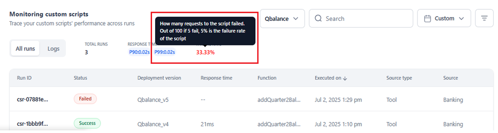
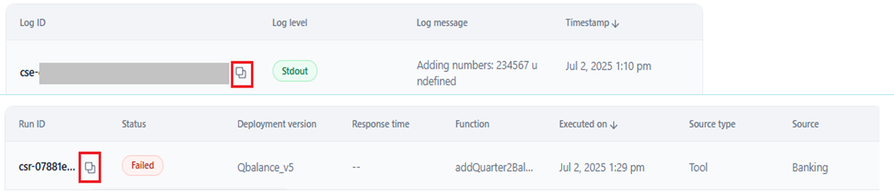
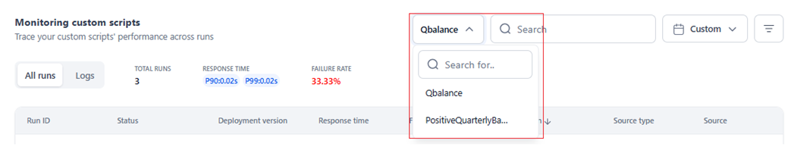
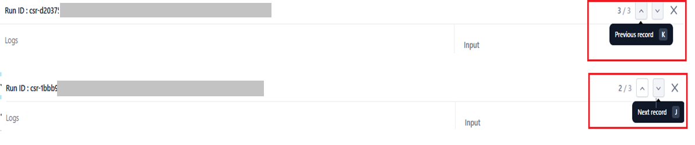
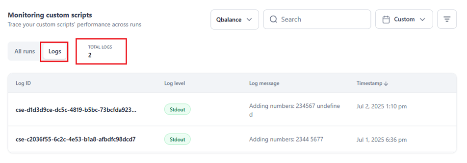
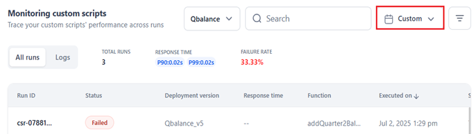
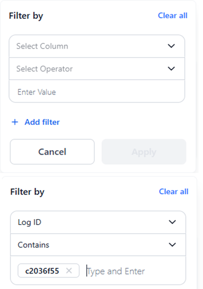
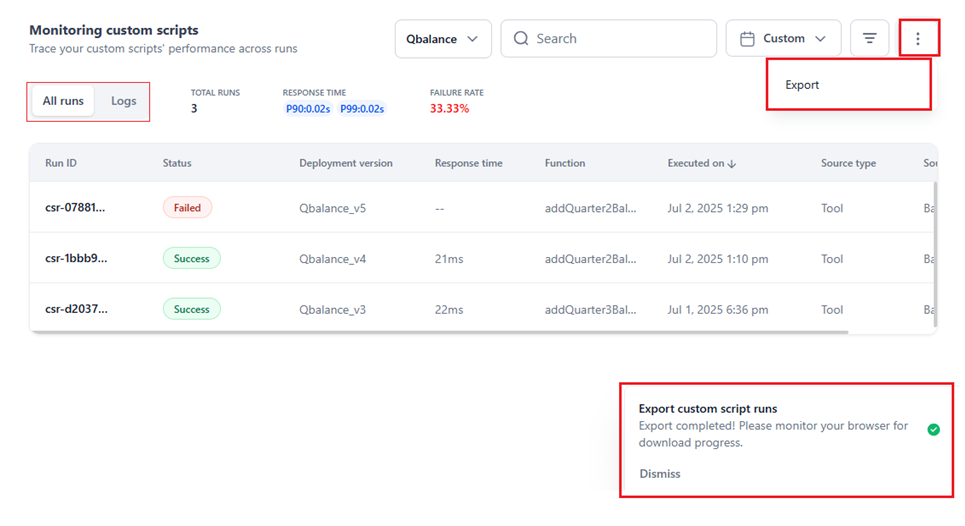

Monitoring Custom Script Runs and Logs¶
Monitoring Custom Scripts provides comprehensive visibility into custom script performance on the AI for Process. It tracks executions across API nodes, Function nodes, and API calls for the selected period, enabling users to view run-level data, analyze logs, and monitor key metrics. Advanced filtering and search capabilities support precise analysis, effective troubleshooting, and proactive issue resolution.
Key Benefits
- Detailed Performance Analysis: Examine script performance across all executions with run metadata, input/output logs, and log-level details.
- Usage Tracking: Detect patterns in script usage and outcomes across multiple runs.
- Performance Optimization: Monitor key metrics to ensure optimal script performance.
- Cost Control: Analyze failure trends and consumption patterns for improved cost visibility.
- Efficient Troubleshooting: Identify and resolve issues using error tracking and detailed log information.
Key Features¶
Search and Filter Capabilities
- Column Filters: View specific records by setting column values or combining filters with logical operators. Learn more.
- Time-based filters Analyze script performance for specific dates or date ranges. Learn more.
- Search Functionality Look up script runs using Run ID and other searchable column fields.
UI Features
-
Tooltips: Hover over metrics for additional information.

-
ID Copying: Click the copy icon when hovering over Run ID or Log ID.

-
Performance Analysis: View hourly data for specific days or daily trends over time.
-
Script Selection: Switch between scripts using the dropdown menu.

-
Status Indicators:
- Green labels for successful runs.
- Red labels for failed runs.
-
"In Progress" for currently deploying scripts
-
Navigation: Use arrow buttons or keyboard shortcuts (
Kfor previous,Jfor next) to navigate records.
-
Click on each script run record to see the record-level view of the log based on the Run ID. Learn more.
- Click the Logs tab to view metrics and summary information on each run-based log recorded for the script.
-
Log visibility depends on how the script is configured by the developer:
-
Failure runs can generate logs if logging is implemented correctly.
-
For in-progress runs, logs using default logging appear only after the run completes.
-
With the custom
koreloggerlibrary, logs populate in real-time, with support for structured log levels (e.g., info, debug, error), making it ideal for live monitoring and debugging.
-
-
Export runs and logs as a dataset in .csv format, based on the applied filters and selected date range for further analysis, editing, and debugging.
{kind=link}
{kind=link}
{kind=link}
{kind=link}
{kind=link}
Best Practices¶
- A script you want to analyze must be consumed either via API calls or through the execution of the API/Function node.
- Identify script runs with low or high response times and the overall P90 and P99 thresholds to isolate underperforming runs for further investigation.
- Analyze the source and source type of a script run to determine the cause for failure, delayed response time, and other performance issues.
- Analyze the input and output for each script run (identified by Run ID) using Log data like Log ID, Log level, Log message, and Timestamp.
- Total Runs, Response Time (P90 and P99), and Failure Rate for all script executions help uncover performance insights, diagnose errors, and optimize script usage.
- Use the input and output code editors available in the record view to analyze and troubleshoot the script run logs.
- Perform script tracing using the record view for a specific run. Learn more.
Access Monitoring Custom Scripts¶
To access the feature, follow the steps below:
-
Log in → In AI for Process Modules top menu → Click Settings.

-
On the left menu, select Monitoring > Custom scripts.
-
For first-time access, select a script from the dropdown menu.
{kind=link}
Key Considerations
- At least one custom script must be deployed and executed via API call or API/Function node.
-
If no custom script has been deployed and executed, or if it has been deployed but not yet executed, the following message is displayed.
-
If a previously deployed and executed script is undeployed, only the existing run-level and log data remain accessible. No new runs or logs will be generated unless the script is redeployed and executed again.
{kind=link}
The system loads the Monitoring custom scripts feature with data for the last week (from the current date), which is the default time range selection.
You can select the required date/date range to view the relevant data.
{kind=link}
Custom Scripts Monitoring Information¶
This feature provides a centralized view of actionable insights into run-level and log-level details of the selected script that has been deployed and executed in your account. There are two sections to enable detailed analysis of each run and the associated execution logs:
- All Runs: Shows data for all script runs, including status, deployed version, response time, function, source, and more.
- Logs: Displays log details for the functions executed within the script, including input, output, errors, informational messages, and debug data.
Customize Data View¶
The key features for customizing the data in the page include:
- Script Name Filter: Use this to select and view data for a specific script you want to monitor. You can also choose another deployed and executed script from the list to view its metrics and logs.
- Time Selection Filter: Required to analyze script runs data for a specific period in the past or current day. Learn more.
- Filter By Option: An optional multi-field, multi-level filter for targeted analysis of runs and logs. Learn more.
Note
- In the All Runs section, all column fields except Executed On can be used as filters.
- In the Logs section, all column fields except Timestamp can be used as filters.
All Runs Section¶
It displays performance metrics and run-level metadata to analyze the script’s performance.
Performance Metrics Summary¶
- Total Runs: Total executions since deployment, indicating usage and billing.
- Response Time: The P90 and P99 response times indicate the thresholds below which 90% and 99% of responses fall, respectively, indicating script consistency. Lower values reflect reliable speed, while higher values suggest performance issues. For example,
- If a script's P90 is 100 seconds, it means that 90% of the runs are completed within 100 seconds or less.
- If a script’s P99 is 100 seconds, it means that 99% of the runs are completed within 100 seconds.
-
Failure Rate: Indicates the number of script runs that failed with an error code out of the total runs executed since deployment. For example, 1 failure in 3 runs = 33.33%.
{kind=link}
Run-level Metadata¶
This section displays a dynamic table with the following data indicating the run-level performance of the script.
| Column Name | Description |
| Run ID | Unique identifier for the script run. |
| Status | Success, Failed, or In Progress. |
| Deployment Version | Version number (increments with each deployment). |
| Response Time | Execution duration (empty for failed/in-progress runs). |
| Function | Executed function name. |
| Executed on | Date and time of execution. |
| Source Type | Workflow or API (from endpoint). |
| Source | Name of the triggering source. |
Logs Section¶
It provides insights into script execution through captured logs.
Performance Metrics Summary¶
The UI summarizes key metrics for the selected period, offering actionable insights into the logs captured during the script execution.
- Total Logs: The total number of logs recorded during the script’s execution.

{kind=link}
The Total Logs metric helps determine:
-
Script activity level – how many actions or events were logged during execution?
-
Debugging depth – more logs can indicate detailed logging, which helps with debugging.
-
Execution complexity – a high number of logs may suggest the script performs multiple operations or involves several functions.
-
Error visibility – helps assess whether sufficient logging is available to trace issues or monitor script behavior effectively.
Log-level Metadata¶
This section displays a dynamic table with the following log-level data:
| Column | Description |
| Log ID | Unique log identifier. |
| Log level | Stdout, Stderr, Info, Debug, Warning, or Error. Learn more about the supported logging options for the gVisor service. |
| Log Message | Recorded message for specific actions. |
| Timestamp | Date and time of log entry. |
Time-based Filtering¶
Use the time selection dropdown (displayed as "Custom") at the top-right of the page to view and monitor script runs/logs within a specific past period or the current day. This allows you to focus on specific runs to track changes or perform targeted debugging.

{kind=link}
Note
Data is displayed only if the selected script’s runs were executed during the selected period.
Learn more about the calendar widget.
Columns Filtering¶
You can narrow down the information displayed for custom script runs and logs by applying custom column filters. This functionality is similar to the Filter in the Audit Logs feature. Learn more.
Additionally, the filter for custom scripts includes the contains operator, which matches results that include a specific keyword or value you enter. For example, the following image depicts checking if the Log message contains the string “Adding.”
{kind=link}
These filters allow you to select specific column values, compare the chosen or entered values, and apply logical operators across columns for multi-level filtering, providing targeted, custom data on the UI.
Filter customization streamlines tracking and debugging of script runs at a detailed level, enhancing the user experience.
Steps to Add a Custom Filter¶
- Select the All runs or Logs tab based on the data you want to filter.
- Click the Filter icon on the top right.
-
Click + Add Filter.
-
In the Filter By window, select column, operator, and enter values.

Note
You can enter multiple values in the Enter Value field by pressing the Tab key after each entry. The system will filter data based on all the entered values.
{kind=link}
{kind=link}
{kind=link}
- Click Apply.
The UI displays all the relevant run and log records that align with the applied filter(s). The number of filters you have applied is displayed on the Filter icon.
{kind=link}
Multiple Filters¶
Users can combine filters using AND/OR operators for multi-level filtering. Note that AND/OR operators cannot be mixed in the same filter set. Learn more about using multiple filters.
Record View¶
The record view offers log-specific insights at the script run level after each execution, enabling faster debugging, better traceability, and more effective optimization of custom scripts.
Key Features
- Focused Debugging: Script execution logs help effectively isolate and troubleshoot issues.
- Detailed Visibility: Shows input, output, and log-level metadata, allowing in-depth analysis of what happened during the run.
- Structured Layout: Displays data in a clear and organized format, often with expandable sections in the JSON editors to facilitate easy inspection of values.
-
Actionable insights:
- Failures or performance bottlenecks.
- Unexpected inputs or outputs.
- Misconfigured logic or API responses.
-
Enhanced Usability: With features such as keyboard navigation (e.g., J/K to switch records), copy-to-clipboard, expand/collapse, and scroll, users can efficiently explore logs.
Steps to Access Record View¶
- In the All Runs section, click the record you want to view.
-
The record view page is displayed with the following information:
- Run ID
- Log-specific information, including the Log ID, Log level, Log message, and timestamp. Learn more.
- JSON editors that display the script’s input and the function’s output, respectively.
- Navigation buttons.
{kind=link}
Enhanced Logging for gVisor Monitoring¶
The AI for Process offers two convenient logging options to help you effectively capture and monitor logs for your custom scripts: using default logging functions or a custom logging library (korelogger).
Key Considerations
- When using default logging (e.g.,
print()in Python orconsole.log()in JavaScript), logs appear in the Logs section only after the script execution completes (success or failure). - Custom logging with the
koreloggerlibrary enables real-time log streaming where logs are populated in the table as they're generated. - We recommend using
koreloggerfor its log-level control and immediate log visibility, which significantly improves monitoring and debugging efficiency.
Option 1: Standard Logging (Simple Setup)¶
This method uses default logging functions such as:
-
print()in Python -
console.log()in JavaScript
Logs generated using this method are captured and displayed under stdout during script execution.
An example script and its output in Python are given below:
def check_print_function():
print("Checking print function...")
print("Print function is working!")
return
The output is captured in stdout as follows:
Option 2: Advanced Logging with Korelogger (Recommended for Monitoring)¶
The korelogger library is provided to users to enable detailed trace capture, supporting enhanced script monitoring and observability.
Additionally, the same logs are also captured in stdout in the following format:
Note
The above log format can be modified as required.
A sample script and its output, which uses the korelogger library in Python, are given below:
Script
import korelogger
def call_openai_chat(prompt):
korelogger.debug("Debug log using korelogger")
korelogger.info("Info log using korelogger")
korelogger.warning("Warning log using korelogger")
korelogger.error("Error log using korelogger")
return
Output captured in stdout
DEBUG :: Debug log using korelogger
INFO :: Info log using korelogger
WARNING :: Warning log using korelogger
ERROR :: Error log using korelogger
Log traces are pushed in the following format:
{
"name": "gvisor_info_log",
"context": {
"trace_id": "0x3453665abxxxxxxxxxxxxxxxxxxxxxxx",
"span_id": "0x7e3xxxxxxxxxxxx",
"trace_state": "[]"
},
"kind": "SpanKind.INTERNAL",
"parent_id": null,
"start_time": "2025-05-14T06:07:27.238927Z",
"end_time": "2025-05-14T06:07:27.238966Z",
"status": {
"status_code": "UNSET"
},
"attributes": {
"traceparent": "00-abxxxxxxxxxxxxxxxxxxxxxxxxxx0-12345xxxxxxxxxxxf-01",
"run_id": "run_12345",
"deployment_id": "deploy_67890",
"source": "api_call",
"source_type": "test",
"log.message": "Using korelogger to log",
"log.level": "INFO",
"log.trace_id": "00-abcdef12345xxxxxxxxxxxxxxxxxxxx0-12345xxxxxxxxxxf-01",
"log.meta.msg": "Using korelogger to log",
"log.meta.pid": "41",
"log.meta.logid": "4XXXXXX5-5XX0-4XX6-bXX8-4XXXXXXXXXX6"
},
"events": [],
"links": [],
"resource": {
"attributes": {
"service.name": "gvisor-py-normal",
"service.instance.id": "4XXXXXX1-9XX9-4XXb-9XXc-aXXXXXXXXXX1",
"deployment.environment": "rnd-xxx.example.com"
},
"schema_url": ""
}
}
Each log entry is organized using the following identifying markers for tracking and filtering:
- traceparent - Links related operations together.
- run_id - Identifies each script execution.
- deployment_id - Tracks which version of your script ran.
- source - Shows where the log came from.
- source_type - Categorizes the type of source.
Log messages and levels are available as log.message and log.level in the attributes field.
Note
The structure of the attributes field can be modified as required.
Export Runs and Logs Data¶
Exporting All Runs and Logs data for the selected custom script downloads a .csv file in the configured schema, reflecting the selected date range and applied column filters. To export the dataset, follow the steps below:
- Select the All Runs or Logs tab.
- Click the Ellipses button, and select Export in the top-right corner.
- A CSV file containing records of all runs or logs for the selected script is downloaded to the configured system location.
Once the data is exported, the following message is displayed.

{kind=link}
If any error occurs during the export process, the following message is displayed:
{kind=link}
The file name is automatically saved in the following formats:
- Runs Data:
<scriptname>_runs_data. Example: Qbalance_runs_data. - Logs data:
<scriptname>_logs_data. Example: Qbalance_logs_data.
The export schema files include the dashboard data organized in the following format.
Runs
{kind=link}
Logs
{kind=link}
Note
Each user’s export process is implemented separately, ensuring that one user's cancellations or adjustments do not interfere with another user’s export pipeline.